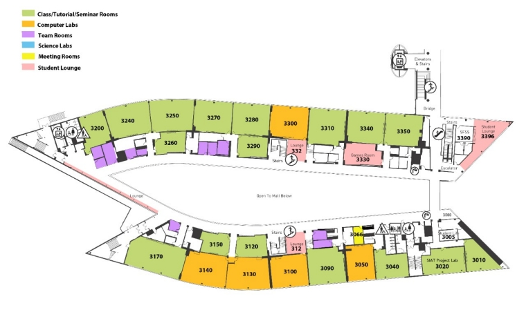
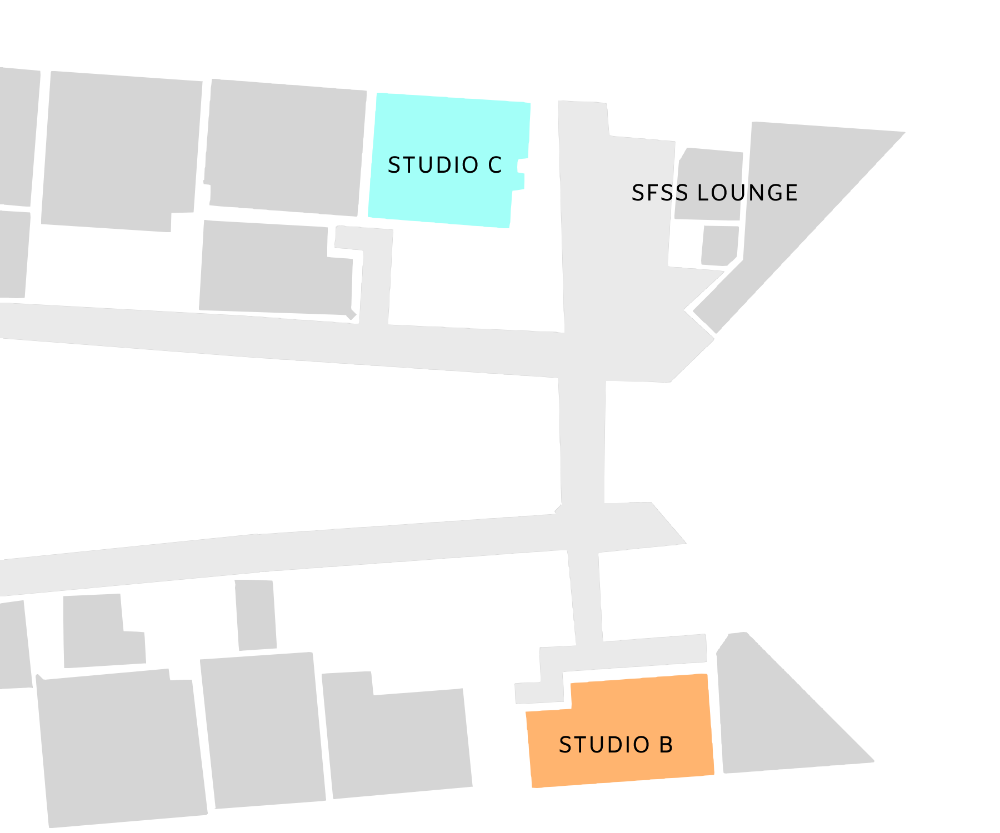

IATSU FIRST YEAR STUDENT GUIDE
project synopsis
This was a project initially created for a collaboration between IATSU and the SIAT advising team. This was an individual design project while the rest of the IATSU team would provide feedback.
timeframe: three months

This project was to create a helpful guide for incoming students to have a better understanding of our program and to be able to navigate around important areas of our school campus. Our team initially decided to hand out this guide to first year students during Welcome Day, a day for new students to tour around the campus and get to know other students.
tools used
- CLIP STUDIO PAINT PRO
- Adobe Indesign
- Adobe Illustrator
brainstorming
In order to make a useful guide, I decided to come up with specific topics that could be covered. Although I had personal experience, I thought it would be useful to have other students give input on what they wanted to know in their first year. I have found that many students have trouble finding resources within our campus despite hearing about them, making it difficult for them to utilize these resources to their advantage. There are also first year mentoring programs that are not promoted enough for student traction.
In addition to this, I wanted to include a section to help new students learn helpful tips for any projects and assignments within our program. For this, I had requested our team president to email professors in our faculty to provide any insight they wish to give students.
challenges
One major challenge I encountered was the lack of a coherent map of the campus other than the one provided via the university website. Even though this was an official map, there was a problem with readability as it had too much information to swallow.
There are three studio spaces used by students called Studios A, B, and C respectively, however, they are not labeled as such in the original map provided. Another problem was the size of the map, since I was only focusing on select parts of the area, it would be unreasonable to use the full map, but I found that it would be difficult to navigate by using only parts of the map. To combat this, I decided to specify specific landmarks near the highlighted rooms.
As shown above, I rendered the map with vector lines, creating a cleaner design as well as showcasing a distinct walkway to navigate to these spaces. I marked important locations with a different colour in order to focus on these areas. I wanted to keep hallways recognizable for a student walking through them.
Another problem I encountered was the amount of information to be included. In my initial brainstorming process, I found that there was a lot of important information and resources to be covered, and it was difficult to keep all of it in a compact booklet. To keep from overwhelming the reader from an abundance of information, I asked fellow students a survey question: what did they wish they knew in their first year?
I found that many students wished they knew more about student consultation groups and events happening around the faculty. Therefore I decided to focus the guide on various extracurricular programs outside of courses to enhance the first year experience, such as the TechTeams program, information on our student union, and various student organizations lookng for designers.
final product
Due to time constraints, the IATSU team had voted to pull out of the collaboration and instead distribute the student guide on our own.
Because of funding issues, the IATSU team was unable to print an adequate amount of booklets to hand out to all first years. However, we able to give some to various students during a Clubs Day exhibition. The students who received these guides found the guides very helpful and friendly.